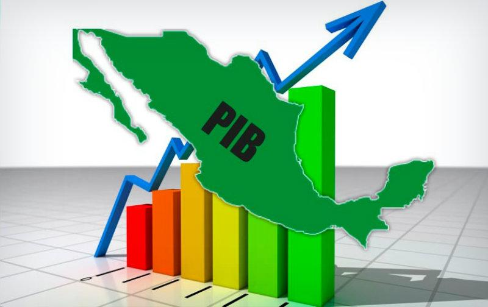

Bienvenido, En esta web podrás calcular el punto de equilibrio y la Elasticidad de la demanda y la oferta, pero antes, ¿porque no una pequeña introducción?
Economía: La economía se define como la ciencia social que estudia la producción, distribución y consumo de bienes y servicios escasos, que satisfacen una necesidad y que logran un fin común.
Sumado a esto se encuentran los factores productivos, aquellos elementos que hacen posible la producción de un bien: La tierra, El capital y el Trabajo, aunque en los tiempos actuales también se puede añadir un cuarto definido como la capacidad empresarial, compuesta por la tecnología y/o el conocimiento(definido como


Aumento Generalizado de los precios en un periodo a través del tiempo, En Colombia se mide por medio del índice de precios de consumidor(IPC) realizado por el DANE, Puede ocurrir por la oferta o por la demanda
Situación del grupo de personas en edad de trabajar, que en la actualidad no tiene empleo aun cuando está disponible para trabajar, se puede clasificar en Abierto o Cerrado, se diferencia en la búsqueda de empleo realizado por el usuario
El Producto Interno Bruto o PIB se define como la suma del valor total de bienes y servicios producidos por todos los sectores únicamente en el territorio colombiano, Por otro lado, el Producto Nacional Bruto es muy parecido al Pib, solo que no es tomado todo lo producido en el territorio, sino lo producido por los colombianos tanto en el territorio Nacional Como en el Extranjero. Por Ultimo El PIBPerCapita es la división entre el PIB y la Población del País, como forma de calcular el crecimiento Poblacional y el crecimiento Económico.
Conducta de los agentes económicos individuales(consumidores, empresas) y como estos determinan los precios y cantidades de distintos Bienes y Servicios, Comercio, mercado, etc.
Estudio de los agregados económicos, analiza los niveles de empleo y desempleo, producción y precios, así como el nivel y valor agregado como el trabajo y el Capital.
John Maynard Keynes (1833-1946) fue un economista Británico definido como el Padre de la Microeconomia, por lo que es vital mencionarlo si hablamos de la Macroeconomia, Teniendo en cuenta su relevancia durante la depresión de 1929, donde debido a la escasez de empleo y acorde a el sitio económico, se detuvo la producción, la compra y el mercado, por lo que el añadió el factor de la inversión por medio del gobierno, por lo que generando tanto un gasto público como empleo para dicha inversión, reactivando el ciclo económico.
Por último, También es importante mencionar a Adam Smith(1723-1790) fue un economista y filosofo escocés, que para en lo que concierne a la economía, debemos mencionar la riqueza de las naciones(1776), libro el cual contradecía la teoría económica de John Maynard Keynes, donde Adam excluye el papel del gobierno en la economía, dado que, para él, el mercado se autorregulaba(punto de equilibrio)por medio de la mano invisible, sin la intervención de factores externos.

A continuación Ingrese Los Valores:
Según su grado de escazes: Libres: Ilimitado acceso, como el oxigeno, o económicos: no accesible para todos, como el petroleo.
Según Funcionalidad:Consumo: Bienes que se usan y se consumen como los alimentos, o de Inversión: Aquellos usados para generar un beneficio Posterior
Según grado de Transformación: Intermedios: Usados para producir otro bien, o Finales: Bienes ya preparados.
Según Facilidad de acceso: Publicos: Accesibles para toda la sociedad, Privados: Usados unicamente por sus dueños, o Propiedad Privada: Tienen dueño propio pero pueden ser usados por otras personas, como los hoteles.
Según su renta: Bienes Normales:
De lujo o superiores: Aumentan si aumenta la renta del consumidor, o de Primera Necesidad: Su demanda aumenta mientras menor sea la renta del consumidor.
Bienes Inferiores: Son aquellos que cuya demanda disminuye mientras la renta aumenta.
| Cantidad Demandada | Precio |
|---|---|
| Cantidad Ofrecida | Precio |
|---|---|
| Punto de Equilibrio: |
|---|
| Cantidad 1 | Precio 1 |
|---|---|
| Cantidad 2 | Precio 2 |
| Elasticidad: |
|---|
| Elasticidad: |
| Cantidad 1 | Precio 1 |
|---|---|
| Cantidad 2 | Precio 2 |
| Elasticidad : |
|---|
| Elasticidad: |
| Cantidad 1 | Precio 1 |
|---|---|
| Cantidad 2 | Precio 2 |
| Elasticidad Cruzada: |
|---|
| Bien: |
| Cantidad 1 | Ingreso 1 |
|---|---|
| Cantidad 2 | Ingreso 2 |
| Elasticidad Ingreso: |
|---|
| Bien: |